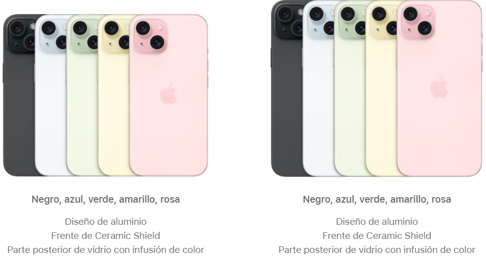
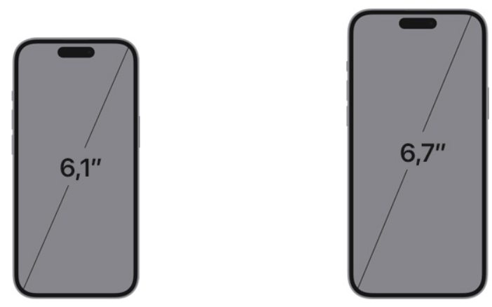
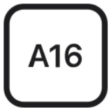
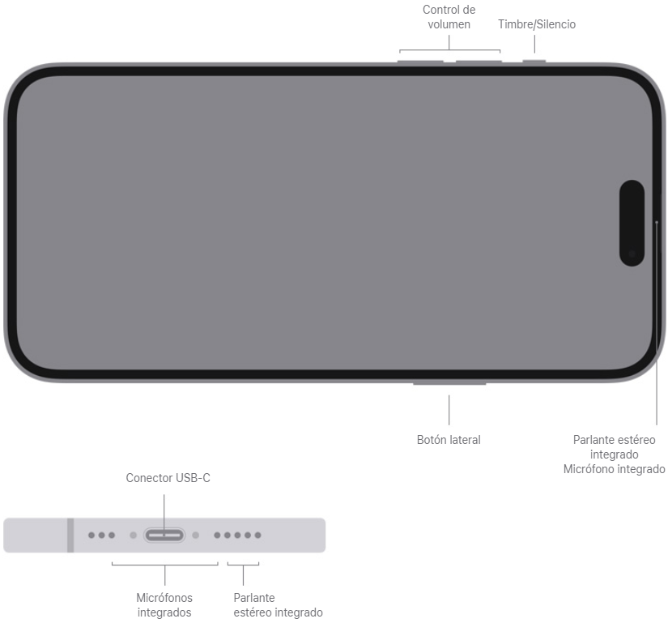
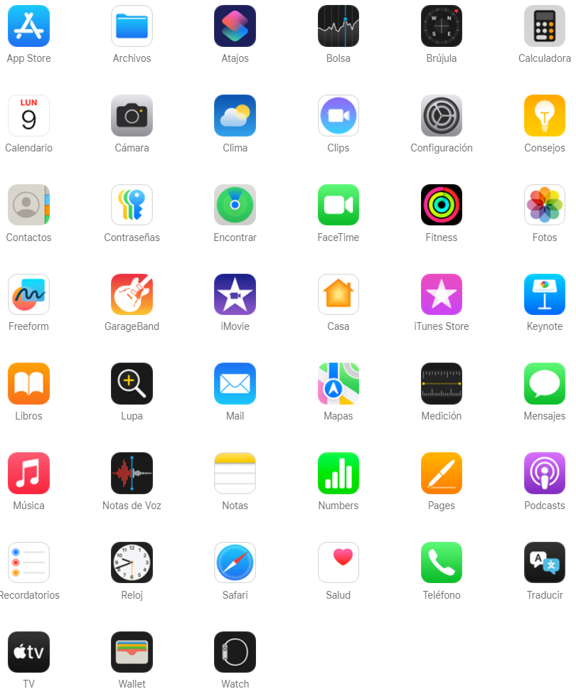
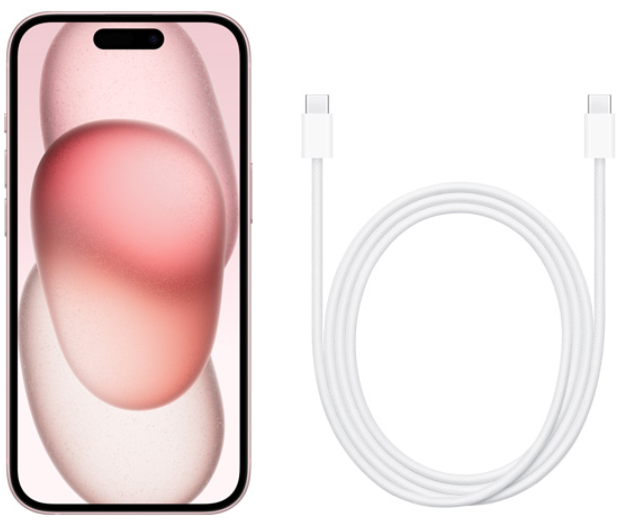

iPhone 15
iPhone 15 Plus
Acabado

Capacidad
128 GB
256 GB
512 GB
128 GB
256 GB
512 GB
Tamaño y peso

Pantalla

Pantalla Super Retina XDR
Pantalla OLED de 6,1 pulgadas (diagonal) sin marco
Resolución de 2556 x 1179 pixeles a 460 ppi
Pantalla Super Retina XDR
Pantalla OLED de 6,7 pulgadas (diagonal) sin marco
Resolución de 2796 x 1290 pixeles a 460 ppi
La pantalla del iPhone 15 tiene esquinas
redondeadas que siguen el elegante diseño curvo del
teléfono, y las esquinas se encuentran dentro de un
rectángulo estándar. Si se mide en forma de
rectángulo estándar, la pantalla tiene 6,12 pulgadas
en diagonal (el área real de visualización es menor).
La pantalla del iPhone 15 tiene esquinas
redondeadas que siguen el elegante diseño curvo del
teléfono, y las esquinas se encuentran dentro de un
rectángulo estándar. Si se mide en forma de
rectángulo estándar, la pantalla tiene 6,69 pulgadas
en diagonal (el área real de visualización es menor).
Ambos modelos
Dynamic Island
Pantalla HDR
True Tone
Amplia gama de colores (P3)
Toque con respuesta háptica
Relación de contraste 2.000.000:1 (normal)
Brillo máximo de 1.000 nits (normal); pico de brillo de 1.600 nits (HDR);
pico de brillo de 2.000 nits (en exteriores)
Revestimiento oleofóbico resistente a huellas dactilares
Compatibilidad para mostrar varios idiomas y caracteres simultáneamente
Resistencia a las
salpicaduras, al
agua y al polvo
Clasificación IP68 (hasta 30 minutos a una profundidad máxima de 6 metros) según la norma
IEC 60529
Chip

Chip A16 Bionic
CPU de 6 núcleos con 2 núcleos de rendimiento y 4 de eficiencia
GPU de 5 núcleos
Neural Engine de 16 núcleos
Cámara
Sistema avanzado de dos cámaras
Gran angular de 48 MP: 26 mm, apertura de ƒ/1.6,
estabilización óptica de imagen por desplazamiento de sensor, 100% Focus Pixels,
admite fotos en superalta resolución (24 MP y 48 MP)
Ultra gran angular de 12 MP: 13 mm, apertura de ƒ/2.4 y ángulo de visión de 120°
Teleobjetivo de 2x de 12 MP (por medio del sensor quad pixel): 52 mm, apertura de ƒ/1.6,
estabilización óptica de imagen por desplazamiento de sensor, 100% Focus Pixels
Zoom óptico de 2x para acercar, zoom óptico de 2x para alejar; rango de zoom óptico de 4x
Zoom digital de hasta 10x
Cubierta del lente de cristal de zafiro
Flash True Tone
Photonic Engine
Deep Fusion
HDR Inteligente 5
Retratos de última generación con Control de Enfoque y Control de Profundidad
Iluminación de Retrato con seis efectos
Modo Noche
Fotos panorámicas (hasta 63 MP)
Estilos Fotográficos
Amplia gama de colores en fotos y Live Photos
Corrección de lente (cámara ultra gran angular)
Corrección avanzada de ojos rojos
Estabilización automática de imagen
Modo Ráfaga
Geoetiquetado de fotos
Captura de imagen en formatos HEIF y JPEG
Grabación de video
Grabación de video 4K Dolby Vision a 24 cps, 25 cps, 30 cps, 60 cps
Grabación de video HD de 1080p a 25 cps, 30 cps o 60 cps
Grabación de video HD de 720p a 30 cps
Modo Cine de hasta 4K HDR a 30 cps
Modo Acción de hasta 2.8K a 60 cps
Grabación de video HDR en Dolby Vision de hasta 4K a 60 cps
Video en cámara lenta de 1080p a 120 cps o 240 cps
Video en cámara rápida con estabilización
Cámara rápida con modo Noche
Video QuickTake
Estabilización óptica de imagen para video por desplazamiento de sensor (cámara gran angular)
Zoom digital de hasta 6x
Zoom de audio
Flash True Tone
Estabilización cinemática de video (4K, 1080p y 720p)
Video con autoenfoque continuo
Toma fotos de 8 MP mientras graba videos 4K
Zoom de reproducción
Grabación de video en formatos HEVC y H.264
Grabación estéreo
Cámara TrueDepth
Cámara de 12 MP
Apertura de ƒ/1.9
Autoenfoque con Focus Pixels
Retina Flash
Photonic Engine
Deep Fusion
HDR Inteligente 5
Retratos de última generación con Control de Enfoque y Control de Profundidad
Iluminación de Retrato con seis efectos
Animoji y Memoji
Modo Noche
Estilos Fotográficos
Amplia gama de colores en fotos y Live Photos
Corrección de lente
Estabilización automática de imagen
Modo Ráfaga
Grabación de video 4K Dolby Vision a 24 cps, 25 cps, 30 cps, 60 cps
Grabación de video HD de 1080p a 25 cps, 30 cps o 60 cps
Modo Cine de hasta 4K HDR a 30 cps
Grabación de video HDR en Dolby Vision de hasta 4K a 60 cps
Video en cámara lenta de 1080p a 120 cps
Video en cámara rápida con estabilización
Cámara rápida con modo Noche
Video QuickTake
Estabilización cinemática de video (4K, 1080p y 720p)
Face ID
Reconocimiento facial por medio de la cámara TrueDepth
Tranquilidad
Emergencia SOS
Detección de Choques
Conexión celular e
inalámbrica
Modelo A3090*
Modelo A3094*
5G NR (Bandas n1, n2, n3, n5, n7, n8, n12, n20, n25, n26, n28, n30, n38,
n40, n41, n48, n53, n66, n70, n75, n76, n77, n78, n79)
FDD‑LTE (Bandas 1, 2, 3, 4, 5, 7, 8, 12, 13, 17, 18, 19, 20, 25, 26, 28, 30
, 32, 66)
TD‑LTE (Bandas 34, 38, 39, 40, 41, 42, 46, 48, 53)
UMTS/HSPA+/DC-HSDPA (850, 900, 1700/2100, 1900, 2100 MHz)
GSM/EDGE (850, 900, 1800, 1900 MHz)
Modelo A3090*
Modelo A3094*
5G (sub-6 GHz) con MIMO 4x45
Gigabit LTE con MIMO 4x4 y LAA5
Wi‑Fi 6 (802.11ax) con MIMO 2x2
Bluetooth 5.3
Chip de banda ultraancha de segunda generación6
NFC con modo de lectura
Tarjetas Express con carga de reserva
Ubicacion
GPS, GLONASS, Galileo, QZSS y BeiDou
Brújula digital
Wi‑Fi
Conexión celular
Microlocalización iBeacon
Llamadas de video
Llamadas de video de FaceTime a través de red celular o Wi-Fi
Llamadas de video de FaceTime HD (1080p) a través de 5G o Wi-Fi
Comparte experiencias como películas, programas de TV, música y apps en una llamada de FaceTime mediante SharePlay
Compartir Pantalla
Modo Retrato en llamadas de video de FaceTime
Audio Espacial
Modos de micrófono: Aislamiento de Voz y Espectro Amplio
Zoom con la cámara trasera
Reproducción de
video
Los formatos compatibles incluyen HEVC, H.264 y ProRes
HDR con Dolby Vision, HDR10+/HDR10 y HLG
AirPlay para duplicación de pantalla y reproducción de fotos y videos hasta 4K HDR a través del
Apple TV (2.ª generación o posterior) o de un smart TV compatible con AirPlay
Compatibilidad con duplicación de video y salida de video: hasta 4K HDR por salida DisplayPort
nativa a través de USB-C o adaptador de USB-C a AV digital (modelo A2119; el adaptador se
vende por separado)
Botones y
conectores
externos

Energía y batería
Reproducción de video
Hasta 20 horas
Reproducción de video en streaming
Hasta 16 horas
Reproducción de audio
Hasta 80 horas
Reproducción de video
Hasta 26 horas
Reproducción de video en streaming
Hasta 20 horas
Reproducción de audio
Hasta 100 horas
Ambos modelos
Batería de iones de litio recargable integrada
Carga inalámbrica de hasta 15 W con cargadores MagSafe10
Carga inalámbrica de hasta 15 W con cargadores Qi210
Carga inalámbrica de hasta 7,5 W con cargadores Qi10
Carga rápida:
Hasta un 50% de carga en aproximadamente 30 minutos11 con
un adaptador de 20 W o más al
usar un cable de carga USB‑C (disponible por separado)
MagSafe
Carga inalámbrica de hasta 15 W10
Anillo magnético
Imán de alineación
Identificación de accesorios mediante NFC
Magnetómetro
Sensores
Face ID
Barómetro
Giroscopio de alto rango dinámico
Acelerómetro de alta fuerza g
Sensor de proximidad
Dos sensores de luz ambiente
Sistema operativo
iOS 18
iOS es el sistema operativo móvil más personal y seguro del mundo. Incluye funcionalidades
avanzadas y está diseñado para proteger tu privacidad.
Descubre las novedades de iOS 18 >
Apps integradas

Compatibilidad con
archivos adjuntos
en Mail
Face ID
Barómetro
Giroscopio de alto rango dinámico
Acelerómetro de alta fuerza g
Sensor de proximidad
Dos sensores de luz ambiente
Requisitos
ambientales
Temperatura operativa: 0 a 35 °C
Temperatura no operativa: −20 a 45 °C
Humedad relativa: 5% a 95% sin condensación
Altitud de funcionamiento: probado hasta 3.000 m
idiomas
Idiomas de la interfaz
Inglés (Australia, Reino Unido, Estados Unidos), chino (simplificado,
tradicional, tradicional de Hong Kong),
francés (Canadá, Francia), alemán, italiano, japonés, coreano, español
(América Latina, España), árabe, búlgaro,
catalán, croata, checo, danés, neerlandés, finés, griego, hebreo, hindi,
húngaro, indonesio, kazajo, malayo, noruego,
polaco, portugués (Brasil, Portugal), rumano, ruso, eslovaco, sueco,
tailandés, turco, ucraniano y vietnamita
Idiomas del teclado QuickType
Inglés (Australia, Canadá, India, Japón, Nueva Zelanda, Singapur, Sudáfrica,
Reino Unido, Estados Unidos), chino simplificado
(escrito, pinyin QWERTY, pinyin de 10 teclas, shuangpin, pincelado)
, chino tradicional (cangjie, escrito, pinyin QWERTY,
pinyin de 10 teclas, shuangpin, pincelado, sucheng, zhuyin), francés (Bélgica, Canadá, Francia, Suiza), alemán (Austria,
Alemania, Suiza), italiano, japonés (kana, romaji), coreano (Dubeolsik, 10 teclas),
español (América Latina, México,
España), ainu, albanés, amhárico, apache (occidental), árabe, árabe (najdi),
armenio, asamés, asirio, azerí, bengalí
(alfabético, InScript, transliteración), bielorruso, bodo, búlgaro, birmano,
cantonés tradicional (cangjie, escrito,
fonético, pincelado, sucheng), catalán, cheroqui, croata, checo, danés,
divehi, dogri, neerlandés, dzongkha, emoji
, estonio, feroés, filipino, finés, flamenco, fula (ádlam), georgiano,
griego, hawaiano, hebreo, hindi (alfabético,
InScript, transliteración), húngaro, islandés, igbo, indonesio, gaélico irlandés, cachemir (árabe, devanagari),
kazajo, jemer, konkaní (devanagari), kurdo (árabe, latino), kirguís,
lao, letón, lituano, macedonio, maithili,
malayo (árabe, latino), maltés, manipurí (bengalí, alfabeto meetei),
maorí, mongol, navajo, nepalí, noruego
(bokmål, nynorsk), oriya (alfabético, InScript), pastún, persa
, persa (Afganistán), polaco, portugués
(Brasil, Portugal), panyabí (alfabético, InScript, QWERTY,
transliteración), rohingya, rumano, ruso,
samoano, sánscrito, santali (devanagari, alfabeto Ol Chiki),
serbio (cirílico, latino), sindi (árabe, devanagari), cingalés, eslovaco,
esloveno, suajili, sueco, tayiko, tamil (anjal, tamil 99, transliteración),
tailandés, tibetano, tongano, turco, turcomano, ucraniano,
uigur, uzbeko (árabe, cirílico, latino), vietnamita (télex, VIQR, VNI),
galés, yidis, akan, chickasaw, choctaw, chuvasio, guyaratí (alfabético, InScript,
transliteración), hausa, hmong (pahawh), ingusetio, cabilio, kannada (InScript, QWERTY, transliteración),
yi de Liangshan, malayalam (alfabético, InScript, transliteración), mandeo, maratí
(InScript, QWERTY, transliteración), micmac, N'Ko, osage, redjang, tamazight
(estándar marroquí), wancho, wolastoqey, yoruba, sami de Inari,
sami kildin, sami de Lule, lushootseed, maskoki, sami septentrional,
sami de Pite, sami skolt, sami meridional, sami de Ume y urdu (alfabético, QWERTY, transliteración)
Idiomas del teclado QuickType con autocorrector
Árabe, árabe (najdi), bengalí (alfabético, InScript,
transliteración), búlgaro, catalán, cheroqui, chino simplificado
(pinyin QWERTY), chino tradicional (pinyin QWERTY),
chino tradicional (estándar, zhuyin), croata, checo, danés, neerlandés,
inglés (Australia, Canadá, India, Japón, Nueva Zelanda, Singapur,
Sudáfrica, Reino Unido, Estados Unidos), estonio, filipino,
finés, neerlandés (Bélgica), francés (Bélgica),
francés (Canadá), francés (Francia), francés (Suiza), alemán (Austria),
alemán (Alemania), alemán (Suiza), griego, guyaratí (alfabético, InScript, transliteración),
hawaiano, hebreo, hindi
(alfabético, InScript, transliteración), húngaro
, islandés, indonesio, gaélico irlandés, italiano, japonés (kana),
japonés (romaji), coreano (Dubeolsik, 10 teclas), letón, lituano, macedonio,
malayo, maratí (alfabético, InScript,
transliteración), noruego (bokmål), noruego (nynorsk), persa, persa (Afganistán),
polaco, portugués (Brasil),
portugués (Portugal), panyabí (alfabético, InScript, QWERTY, transliteración), rumano, ruso, serbio (cirílico),
serbio (latino), eslovaco, esloveno, español (América Latina)
, español (México), español (España), sueco, tamil
(alfabético, anjal, Tamil 99, transliteración), télugu, tailandés,
turco, ucraniano, urdu (alfabético, QWERTY,
transliteración) y vietnamita (télex)
Idiomas del teclado QuickType con entrada de texto predictivo
Inglés (Australia, Canadá, India, Japón, Singapur, Sudáfrica, Reino Unido,
Estados Unidos), chino (simplificado, tradicional),
francés (Bélgica, Canadá, Francia, Suiza), alemán (Austria, Alemania, Suiza), italiano
, japonés, coreano, español (América Latina,
México, España), árabe, árabe (najdi), cantonés (tradicional), neerlandés (Bélgica, Países Bajos),
hindi, portugués (Brasil,
Portugal), ruso, sueco, tailandés, turco, vietnamita, hebreo, polaco, rumano, bengalí, checo,
danés, guyaratí, griego,
islandés, indonesio, lituano, maratí, noruego (bokmål, nynorsk), panyabí, esloveno, tamil y télugu
Idiomas del teclado QuickType con entrada de texto multilingüe
Inglés (Australia, Canadá, India, Japón, Nueva Zelanda, Singapur, Sudáfrica, Reino Unido,
Estados Unidos), chino simplificado
(pinyin), chino tradicional (pinyin), francés (Francia), francés (Bélgica),
francés (Canadá), francés (Suiza), alemán (Alemania),
alemán (Austria), alemán (Suiza), italiano, japonés (romaji), portugués (Brasil),
portugués (Portugal), español (España),
español (América Latina), español (México), neerlandés (Bélgica), neerlandés (Países Bajos),
hindi (latino), vietnamita,
polaco, rumano y turco
Idiomas del teclado QuickType con sugerencias contextuales
Inglés (Australia, Canadá, India, Japón, Nueva Zelanda, Singapur, Sudáfrica,
Reino Unido, Estados Unidos), chino (simplificado),
francés (Bélgica), francés (Canadá), francés (Francia), francés (Suiza),
alemán (Austria), alemán (Alemania), alemán (Suiza),
italiano, español (América Latina), español (México), español (España),
árabe, árabe (najdi), neerlandés (Bélgica), neerlandés
(Países Bajos), hindi (devanagari), hindi (latino), ruso, sueco, portugués (Brasil), turco y vietnamita
Idiomas del teclado QuickType con QuickPath
Inglés (Australia, Canadá, India, Japón, Nueva Zelanda, Singapur, Sudáfrica,
Reino Unido, Estados Unidos), chino simplificado
(pinyin QWERTY), chino tradicional (pinyin QWERTY), francés (Canadá),
francés (Francia), francés (Suiza), alemán (Austria),
alemán (Alemania), alemán (Suiza), italiano, español (América Latina),
español (México), español (España), portugués (Brasil),
portugués (Portugal), neerlandés (Bélgica), neerlandés (Países Bajos), sueco, vietnamita,
árabe, hebreo, coreano, polaco y rumano
en la Caja
